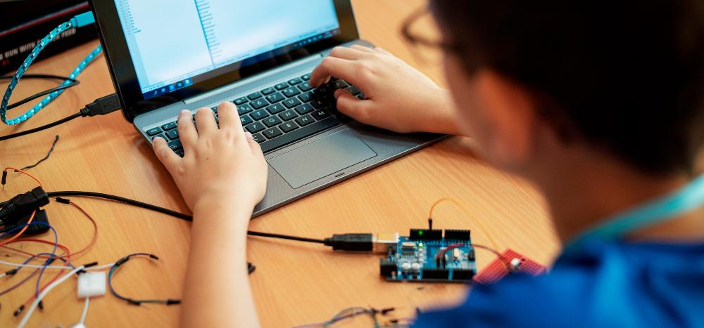

How use
REVISÃO LAB is a totally innovative tool in order to bring the developer closer to his own product,
it is a project designed for workers' comfort in the midst of a 2021 pandemic COVID-19. REVIEW LAB
is a website developed to establish a connection with our systems of use used on working days.
The operation takes place via a connection of a device connected to the IO
(internet of things "Framboesa-pi" "Raspberri-pi") Raspberri-pi will access the device; LinkBOX, which
is responsible for decoding and storing as it occurs in real time generated in the production field,
or in a test laboratory, and reproduced online. This new technology is capable of simulating any
of our machines used in the field on a WEB server, in real time.
